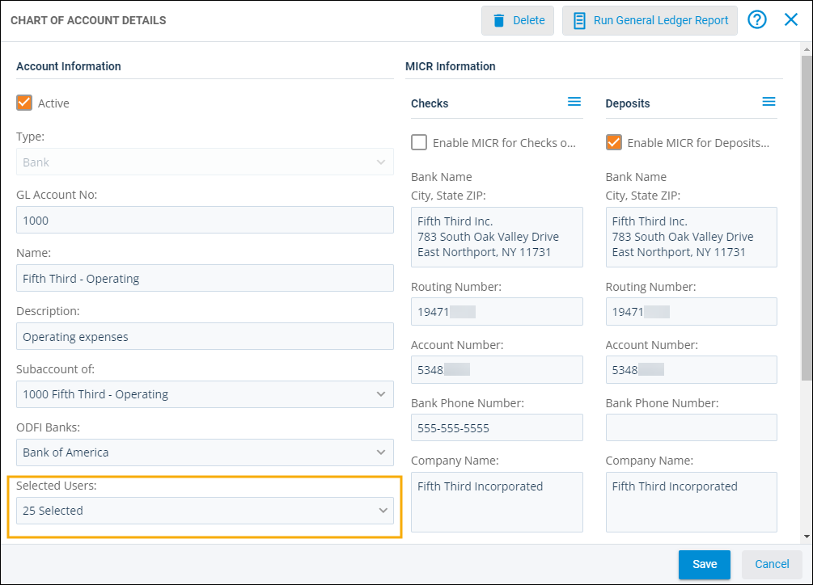
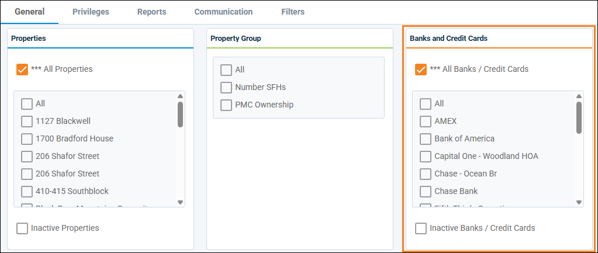

Source: https://rmxhelp.rentmanager.com/Topics/Express/KB/Users-Limit-Bank-Credit-Card-Access.htm
Limit Access to a Bank or Credit Card
To help protect and manage all of the important and sensitive data in your database, Rent Manager provides you with the tools to help keep it safe. This can be done easily by limiting users' access in your database. In Rent Manager, access means the privileges and permissions needed to view, edit, or remove data.
For example, you may have employees that are responsible for managing the finances for a particular property, so they would need only the privileges and permissions necessary to view and edit banking information for that property.
In situations like this, Rent Manager allows you to choose which users can access your banks and credit cards by providing you with two options. The first is to limit user access at the bank or credit card level. This method is ideal if you have users with responsibilities that involve specific bank accounts. The second method is to remove access to certain banks or credit cards at the user level. This allows you to select multiple banks at once so that you don't have to spend time going to each bank to change a user's access to it.
Limit Access by Account
Related Privileges
| Group | Privilege | Column |
|---|---|---|
| Accounting | General ledger accounts | View, Edit |
For more information, refer to Control User Access.
Limiting access by bank accounts allows you to control what actions a user can take based on which bank accounts they can access. For example, this method is ideal if you have users who accept tenant payments that need to be recorded in specific bank accounts. To limit user access by bank account, do the following:
-
Go to
 arrow_forward Accounting arrow_forward General arrow_forward Chart of Accounts and select a bank or credit card account.
arrow_forward Accounting arrow_forward General arrow_forward Chart of Accounts and select a bank or credit card account. -
In the Selected Users field, click the drop-down menu to select or deselect users from the list.

-
Click Save to accept your changes.
Only the user(s) you have selected have access to this bank or credit card. Changes are applied the next time the user logs in to Rent Manager.
Limit Access by User
Limiting access by user accounts ensures users can view only the banks and credit cards they need to for their job requirements. For example, this method is ideal for users who perform actions on only one property and therefore need access to only that property's bank. This method also allows you to select multiple accounts at once so that you don't have to spend time going to each bank or credit card to change users' access. To limit access to banks or credit cards at the user level, do the following:
-
Go to
arrow_forward  Administration arrow_forward Users and select a user.
Administration arrow_forward Users and select a user. -
On the Banks and Credit Cards tile, select the banks or credit cards to which the user should have access.

-
Click Save to accept your changes.
Only the bank(s) and credit card(s) you selected are accessible to this user. Changes are applied the next time the user logs in to Rent Manager.